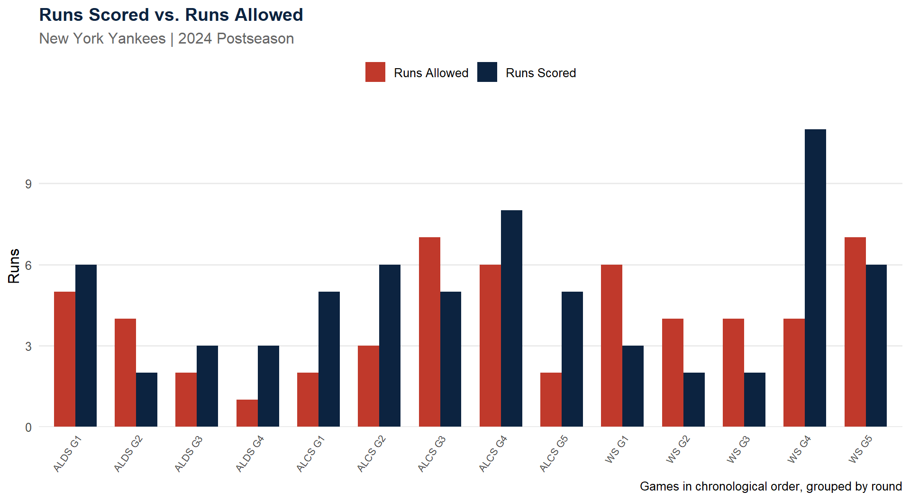
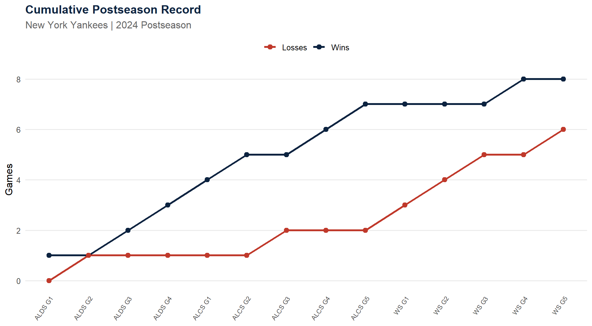
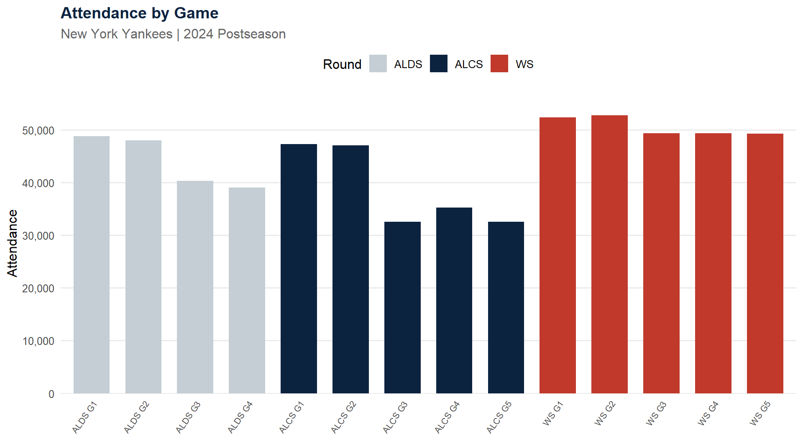

Show Code
knitr::kable(
series_summary,
col.names = c("Round", "Wins", "Losses", "Opponent", "Record"),
align = c("l", "r", "r", "l", "r")
)| Round | Wins | Losses | Opponent | Record |
|---|---|---|---|---|
| ALDS | 3 | 1 | KCR | 3-1 |
| ALCS | 4 | 1 | CLE | 4-1 |
| WS | 1 | 4 | LAD | 1-4 |
2024 MLB Postseason
July 10, 2026
The New York Yankees’ 2024 season ran all the way to the World Series before ending in a loss to the Dodgers. Below is a game-by-game breakdown of their full postseason run.
Postseason Record: 8-6 | Runs Scored: 67 | Runs Allowed: 57 | Run Differential: +10 | Extra-Inning Games: 3
Beat the KCR 3-1 in the ALDS, beat the CLE 4-1 in the ALCS, then fell to the LAD 1-4 in the World Series.
| Round | Wins | Losses | Opponent | Record |
|---|---|---|---|---|
| ALDS | 3 | 1 | KCR | 3-1 |
| ALCS | 4 | 1 | CLE | 4-1 |
| WS | 1 | 4 | LAD | 1-4 |
team |>
select(game_label, R, RA) |>
pivot_longer(cols = c(R, RA), names_to = "type", values_to = "runs") |>
mutate(type = recode(type, R = "Runs Scored", RA = "Runs Allowed")) |>
ggplot(aes(x = game_label, y = runs, fill = type)) +
geom_col(position = "dodge", width = 0.7) +
scale_fill_manual(values = c("Runs Scored" = win_color, "Runs Allowed" = loss_color)) +
scale_y_continuous(expand = expansion(mult = c(0, 0.08))) +
labs(
title = "Runs Scored vs. Runs Allowed",
subtitle = "New York Yankees | 2024 Postseason",
x = NULL, y = "Runs", fill = NULL,
caption = "Games in chronological order, grouped by round"
) +
theme_minimal(base_size = 12) +
theme(plot.title = element_text(face = "bold", color = team_primary),
plot.subtitle = element_text(color = "gray40"),
axis.text.x = element_text(angle = 55, hjust = 1, size = 8),
legend.position = "top",
panel.grid.major.x = element_blank(), panel.grid.minor = element_blank())
Insight: The Yankees’ offense disappeared in the World Series, averaging just 4.8 runs per game against the Dodgers versus 4.8 runs per game in the ALDS and ALCS combined.
team |>
select(game_label, cum_wins, cum_losses) |>
pivot_longer(cols = c(cum_wins, cum_losses), names_to = "type", values_to = "count") |>
mutate(type = recode(type, cum_wins = "Wins", cum_losses = "Losses")) |>
ggplot(aes(x = game_label, y = count, color = type, group = type)) +
geom_line(linewidth = 1.1) +
geom_point(size = 2.5) +
scale_color_manual(values = c("Wins" = win_color, "Losses" = loss_color)) +
labs(
title = "Cumulative Postseason Record",
subtitle = "New York Yankees | 2024 Postseason",
x = NULL, y = "Games", color = NULL
) +
theme_minimal(base_size = 12) +
theme(plot.title = element_text(face = "bold", color = team_primary),
plot.subtitle = element_text(color = "gray40"),
axis.text.x = element_text(angle = 55, hjust = 1, size = 8),
legend.position = "top",
panel.grid.major.x = element_blank(), panel.grid.minor = element_blank())
ggplot(team, aes(x = game_label, y = attendance, fill = stage)) +
geom_col(width = 0.7) +
scale_fill_manual(values = c("ALDS" = team_secondary, "ALCS" = team_primary, "WS" = loss_color)) +
scale_y_continuous(labels = comma, expand = expansion(mult = c(0, 0.08))) +
labs(
title = "Attendance by Game",
subtitle = "New York Yankees | 2024 Postseason",
x = NULL, y = "Attendance", fill = "Round"
) +
theme_minimal(base_size = 12) +
theme(plot.title = element_text(face = "bold", color = team_primary),
plot.subtitle = element_text(color = "gray40"),
axis.text.x = element_text(angle = 55, hjust = 1, size = 8),
legend.position = "top",
panel.grid.major.x = element_blank(), panel.grid.minor = element_blank())
summary_tbl <- tibble(
Statistic = c("Games Played", "Record", "Runs Scored", "Runs Allowed",
"Run Differential", "Runs Scored/Game", "Runs Allowed/Game",
"Extra-Inning Games", "Average Attendance", "Highest Attendance"),
Value = c(
as.character(nrow(team)),
paste0(overall_wins, "-", overall_losses),
as.character(runs_scored),
as.character(runs_allowed),
sprintf("%+d", runs_scored - runs_allowed),
sprintf("%.2f", mean(team$R)),
sprintf("%.2f", mean(team$RA)),
as.character(extra_games),
comma(round(mean(team$attendance))),
comma(max(team$attendance))
)
)
knitr::kable(summary_tbl, align = c("l", "r"), col.names = c("Statistic", "Value"))| Statistic | Value |
|---|---|
| Games Played | 14 |
| Record | 8-6 |
| Runs Scored | 67 |
| Runs Allowed | 57 |
| Run Differential | +10 |
| Runs Scored/Game | 4.79 |
| Runs Allowed/Game | 4.07 |
| Extra-Inning Games | 3 |
| Average Attendance | 44,565 |
| Highest Attendance | 52,725 |
The Yankees’ 2024 postseason run was carried by dominant series wins over the Royals (3-1) and Guardians (4-1), outscoring both opponents across ten games. That offense went cold in the World Series against the Dodgers, where the Yankees managed just one win in five games and were outscored 25-24. 3 of the fourteen postseason games went to extra innings, underscoring how close the margins were in October.